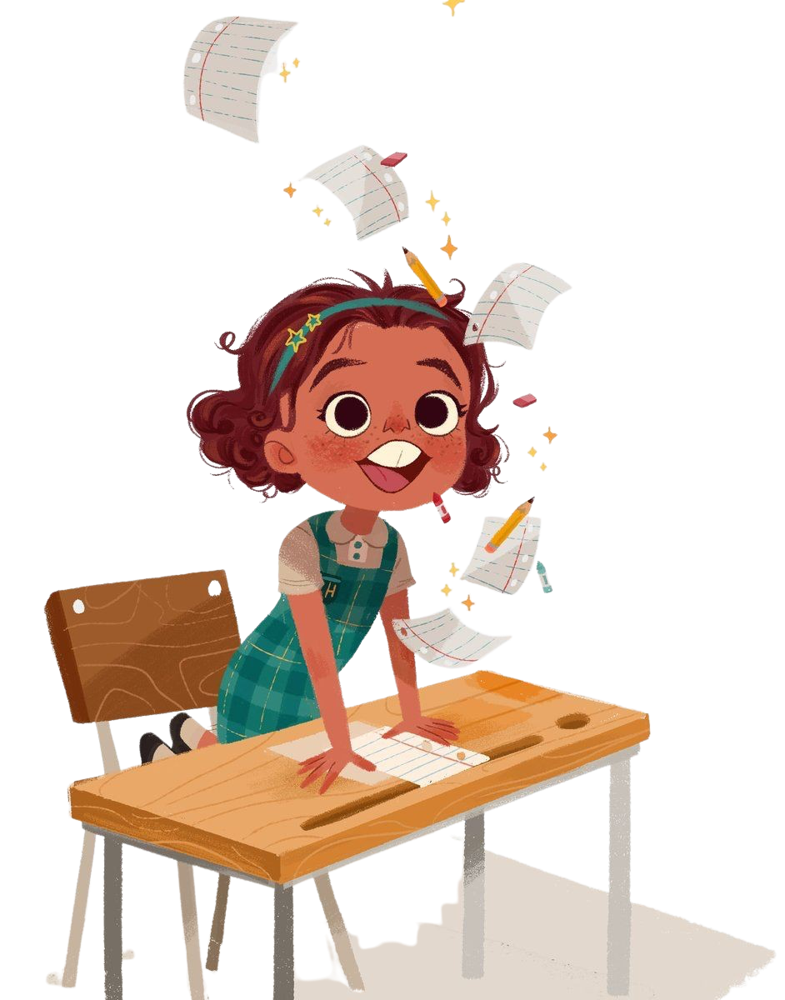

GPA 3.73 (Grade 11)
GPA 3.53 (Grade 12)
I have prior experience in research. One of my research papers on Nepal Child Healthcare have also been published at SSRN.
I have gained leadership skills through my time as School prefect, basketball player, and so many other projects and presentations i have been part of. And I am as good a leader as I am a learner.
I work at an INGO as content writer and mostly work on proposal writing. I also write about social issues, blogs and poems (Mostly on instagram).
I teach Compulsory Mathematics, Optional Mathematics and Science Grade-10 student. I am really good at explaining difficult concepts in simple way.
I represented my school team in Grade 11 and 12 and also hosted daily training sessions to teach basketball skills to girls' houses.
I make video podcasts to archive the stories of alumni. For the Golden Jubilee celebration of Budhanilkantha School I edited & released its trailer.
I can make websites using HTML and CSS. I also have sound idea of designing and color-gradients.